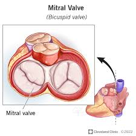

Mitral Valve
The mitral valve is one of the four main valves in the heart and plays a crucial role in controlling blood flow between the heart's chambers.

Mitral Valve of the Heart
The mitral valve is located between the left atrium and the left ventricle of the heart. It has two flaps, or leaflets, which open and close to regulate blood flow.
Function:
- When the heart relaxes between beats, the mitral valve opens to allow oxygen-rich blood to flow from the left atrium into the left ventricle.
- Once the left ventricle is filled, the valve closes to prevent blood from flowing backward into the atrium when the heart contracts and pumps blood out to the body.
Structure:
- The two leaflets of the mitral valve are connected to the heart muscle by thin, strong cords called chordae tendineae. These are attached to small muscles called papillary muscles, which help keep the valve shut during contraction.
Mitral Valve Disorders:
- Mitral Valve Prolapse (MVP): A condition where the valve’s leaflets bulge backward into the left atrium during heartbeats.
- Mitral Regurgitation: When the valve doesn’t close tightly, allowing blood to flow backward into the atrium.
- Mitral Stenosis: A narrowing of the valve opening, restricting blood flow from the left atrium to the left ventricle.
The mitral valve ensures that the heart's blood flow remains efficient, preventing oxygenated and deoxygenated blood from mixing and ensuring that the body gets a steady supply of oxygen-rich blood.